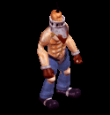
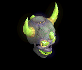

冠 をドロップするmob一覧
一覧ページへ
| 大型骸骨 | アンデット | 一般1 | ||||||||
|---|---|---|---|---|---|---|---|---|---|---|
 | 鈍器(410) | 両手剣(270) | 弾(410) | 職業鎧(230) | 冠(210) | 能力向上1(160) | 鎌(270) | |||
| 死霊魔術師 | アンデット | セミ1 | ||||||||
 | 杖(390) | 翼(260) | イベント(390) | グローブ(220) | 冠(200) | ブローチ(200) | 本(390) | 水晶(260) | ||
| レイス | アンデット | セミ2 | ||||||||
 | 杖(420) | 翼(280) | 状態異常回復1(420) | グローブ(230) | 冠(210) | ブローチ(250) | 本(420) | 水晶(280) | ||
| ワイト | アンデット | セミ3 | ||||||||
 | 杖(450) | 投擲(300) | cP回復(450) | グローブ(250) | 冠(230) | ブローチ(300) | 本(450) | |||
| リッチ | アンデット | ボス2 | ||||||||
 | 杖(490) | 翼(330) | HP回復(490) | グローブ(270) | 冠(250) | ブローチ(400) | 本(490) | 水晶(330) | ||
| アークリッチ | アンデット | ボス3 | ||||||||
 | 杖(510) | 投擲(340) | 状態異常回復2(130) | グローブ(280) | 冠(260) | ブローチ(500) | 本(510) | |||
| 偽伝道師 | 人間 | 一般2 | ||||||||
 | 鈍器(380) | 翼(250) | 盾(380) | 職業鎧(210) | 冠(190) | 十字架(180) | 水晶(250) | |||
| エクソシスト | 人間 | 一般3 | ||||||||
 | 鈍器(360) | 翼(240) | 状態異常回復2(90) | 職業鎧(200) | 冠(180) | 十字架(190) | 水晶(240) | |||
| オーク | 人間 | 一般3 | ||||||||
 | 鈍器(360) | 牙(240) | 弾(360) | 足(200) | 冠(180) | 帰還(140) | 双剣(240) | |||
| チタン | 人間 | ボス1 | ||||||||
|  | スリング(470) | 杖(310) | 弾(470) | 足(260) | 冠(240) | 帰還(190) | 本(310) | |||
| レッドアイ魔法師 | 人間 | 一般4 | ||||||||
 | ステッキ(300) | 笛(200) | 矢(300) | マント(170) | 冠(150) | ブローチ(180) | 魔弾(300) | |||
| レッドアイ幹部 | 人間 | セミ1 | ||||||||
 | ステッキ(390) | 鞭(260) | cP回復(390) | マント(220) | 冠(200) | ブローチ(190) | ||||
| レッドアイ元老 | 人間 | セミ2 | ||||||||
 | ステッキ(420) | 笛(280) | 矢(420) | マント(230) | 冠(210) | ブローチ(200) | 魔弾(420) | |||
| レッドアイ法術師 | 人間 | ボス1 | ||||||||
 | ステッキ(470) | 杖(310) | 状態異常回復2(120) | マント(260) | 冠(240) | ブローチ(210) | 本(310) | |||
| アイウィング | 悪魔 | 一般3 | ||||||||
 | 笛(360) | 翼(240) | 状態異常回復1(360) | 兜・帽子(200) | 冠(180) | 帰還(140) | 水晶(240) | |||
| ビホルダー | 悪魔 | セミ2 | ||||||||
 | 投擲(420) | 翼(280) | 状態異常回復1(420) | 兜・帽子(230) | 冠(210) | 帰還(170) | 水晶(280) | |||
| オーバーシアー | 悪魔 | ボス2 | ||||||||
 | 投擲(490) | 翼(330) | cP回復(490) | 兜・帽子(270) | 冠(250) | 帰還(200) | 水晶(330) | |||
| ラットキング | 悪魔 | ボス1 | ||||||||
 | 投擲(470) | 笛(310) | 弾(470) | 足(260) | 冠(240) | 能力向上1(190) | ||||
| ゴートマン | 悪魔 | 一般1 | ||||||||
 | 笛(410) | 鈍器(270) | 状態異常回復2(100) | マント(230) | 冠(210) | 能力向上1(160) | ||||
| ストーンオブザー | 悪魔 | セミ2 | ||||||||
 | none(420) | 弓(280) | 矢(420) | 足(230) | 冠(210) | 特殊1(170) | 銃(280) | 魔弾(420) | ||
| 淡水亀 | 動物 | 一般1 | ||||||||
 | ステッキ(410) | 杖(270) | 盾(410) | 鎧(230) | 冠(210) | 能力向上2(160) | 本(270) | |||
| ヒュージタートル | 動物 | 一般2 | ||||||||
 | ステッキ(380) | 杖(250) | 状態異常回復2(100) | 鎧(210) | 冠(190) | 能力向上2(150) | 本(250) | |||
| ビッグシェル | 動物 | 一般3 | ||||||||
 | ステッキ(360) | 杖(240) | 盾(360) | 鎧(200) | 冠(180) | 能力向上2(140) | 本(240) | |||
| トライアングル | 動物 | セミ1 | ||||||||
 | ステッキ(390) | 杖(260) | cP回復(390) | 鎧(220) | 冠(200) | 能力向上2(160) | 本(260) | |||
| タートルドラゴン | 動物 | ボス1 | ||||||||
 | ステッキ(470) | 杖(310) | 盾(470) | 鎧(260) | 冠(240) | 能力向上2(190) | 本(310) | |||
| 蟲 | 動物 | 一般1 | ||||||||
| 鈍器(410) | スリング(270) | イベント(410) | マント(230) | 冠(210) | 帰還(160) | |||||
| リーチ | 動物 | 一般2 | ||||||||
 | 鈍器(380) | 片手剣(250) | イベント(380) | マント(210) | 冠(190) | 帰還(150) | クロー(250) | |||
| マゴット | 動物 | 一般3 | ||||||||
 | 鈍器(360) | スリング(240) | イベント(360) | マント(200) | 冠(180) | 帰還(140) | ||||
| クローラー | 動物 | 一般4 | ||||||||
 | 鈍器(300) | 片手剣(200) | イベント(300) | マント(170) | 冠(150) | 帰還(120) | クロー(200) | |||
| クリーパー | 動物 | セミ1 | ||||||||
 | 鈍器(390) | スリング(260) | イベント(390) | マント(220) | 冠(200) | 帰還(160) | ||||
| 大型骸骨Ex | アンデット | 一般1 | ||||||||
| 鈍器(410) | 両手剣(270) | 弾(410) | 職業鎧(230) | 冠(210) | 能力向上1(160) | 鎌(270) | |||
| 死霊魔術師Ex | アンデット | セミ1 | ||||||||
| 杖(450) | 翼(300) | イベント(450) | グローブ(250) | 冠(230) | 宝石(180) | 本(450) | 水晶(300) | ||
| レイスEx | アンデット | セミ2 | ||||||||
| 杖(650) | 翼(430) | 状態異常回復1(650) | グローブ(360) | 冠(330) | 宝石(260) | 本(650) | 水晶(430) | ||
| ワイトEx | アンデット | セミ3 | ||||||||
| 杖(800) | 投擲(530) | cP回復(800) | グローブ(440) | 冠(400) | 宝石(320) | 本(800) | |||
| リッチEx | アンデット | ボス2 | ||||||||
| 杖(2000) | 翼(1330) | HP回復(2000) | グローブ(1110) | 冠(1000) | 宝石(800) | 本(2000) | 水晶(1330) | ||
| アークリッチEx | アンデット | ボス3 | ||||||||
| 杖(2800) | 投擲(1870) | 状態異常回復2(700) | グローブ(1560) | 冠(1400) | 宝石(1120) | 本(2800) | |||
| 偽伝道師Ex | 人間 | 一般2 | ||||||||
| 鈍器(380) | 翼(250) | 盾(380) | 職業鎧(210) | 冠(190) | 十字架(180) | 水晶(250) | |||
| エクソシストEx | 人間 | 一般3 | ||||||||
| 鈍器(360) | 翼(240) | 状態異常回復2(90) | 職業鎧(200) | 冠(180) | 十字架(190) | 水晶(240) | |||
| オークEx | 人間 | 一般3 | ||||||||
| 鈍器(360) | 牙(240) | 弾(360) | 足(200) | 冠(180) | 帰還(140) | 双剣(240) | |||
| チタンEx | 人間 | ボス1 | ||||||||
| スリング(1200) | 杖(800) | 弾(1200) | 足(670) | 冠(600) | 帰還(480) | 本(800) | ||||
| レッドアイ魔法師Ex | 人間 | 一般4 | ||||||||
| ステッキ(300) | 笛(200) | 矢(300) | マント(170) | 冠(150) | ブローチ(180) | 魔弾(300) | |||
| レッドアイ幹部Ex | 人間 | セミ1 | ||||||||
| ステッキ(450) | 鞭(300) | cP回復(450) | マント(250) | 冠(230) | ブローチ(190) | ||||
| レッドアイ元老Ex | 人間 | セミ2 | ||||||||
| ステッキ(650) | 笛(430) | 矢(650) | マント(360) | 冠(330) | ブローチ(200) | 魔弾(650) | |||
| レッドアイ法術師Ex | 人間 | ボス1 | ||||||||
| ステッキ(1200) | 杖(800) | 状態異常回復2(300) | マント(670) | 冠(600) | ブローチ(210) | 本(800) | |||
| アイウィングEx | 悪魔 | 一般3 | ||||||||
| 笛(360) | 翼(240) | 状態異常回復1(360) | 兜・帽子(200) | 冠(180) | 帰還(140) | 水晶(240) | |||
| ビホルダーEx | 悪魔 | セミ2 | ||||||||
| 投擲(650) | 翼(430) | 状態異常回復1(650) | 兜・帽子(360) | 冠(330) | 帰還(260) | 水晶(430) | |||
| オーバーシアーEx | 悪魔 | ボス2 | ||||||||
| 投擲(2000) | 翼(1330) | cP回復(2000) | 兜・帽子(1110) | 冠(1000) | 帰還(800) | 水晶(1330) | |||
| ラットキングEx | 悪魔 | ボス1 | ||||||||
| 投擲(1200) | 笛(800) | 弾(1200) | 足(670) | 冠(600) | 能力向上1(480) | ||||
| ゴートマンEx | 悪魔 | 一般1 | ||||||||
| 笛(410) | 鈍器(270) | 状態異常回復2(100) | マント(230) | 冠(210) | 能力向上1(160) | ||||
| ストーンオブザーEx | 悪魔 | セミ2 | ||||||||
| none(650) | 弓(430) | 矢(650) | 足(360) | 冠(330) | 特殊1(260) | 銃(430) | 魔弾(650) | ||
| 淡水亀Ex | 動物 | 一般1 | ||||||||
| ステッキ(410) | 杖(270) | 盾(410) | 鎧(230) | 冠(210) | 能力向上2(160) | 本(270) | |||
| ヒュージタートルEx | 動物 | 一般2 | ||||||||
| ステッキ(380) | 杖(250) | 状態異常回復2(100) | 鎧(210) | 冠(190) | 能力向上2(150) | 本(250) | |||
| ビッグシェルEx | 動物 | 一般3 | ||||||||
| ステッキ(360) | 杖(240) | 盾(360) | 鎧(200) | 冠(180) | 能力向上2(140) | 本(240) | |||
| トライアングルEx | 動物 | セミ1 | ||||||||
| ステッキ(450) | 杖(300) | cP回復(450) | 鎧(250) | 冠(230) | 能力向上2(180) | 本(300) | |||
| タートルドラゴンEx | 動物 | ボス1 | ||||||||
| ステッキ(1200) | 杖(800) | 盾(1200) | 鎧(670) | 冠(600) | 能力向上2(480) | 本(800) | |||
| ワームEx | 動物 | 一般1 | ||||||||
| 鈍器(410) | スリング(270) | イベント(410) | マント(230) | 冠(210) | 帰還(160) | |||||
| リーチEx | 動物 | 一般2 | ||||||||
| 鈍器(380) | 片手剣(250) | イベント(380) | マント(210) | 冠(190) | 帰還(150) | クロー(250) | |||
| マゴットEx | 動物 | 一般3 | ||||||||
| 鈍器(360) | スリング(240) | イベント(360) | マント(200) | 冠(180) | 帰還(140) | ||||
| クローラーEx | 動物 | 一般4 | ||||||||
| 鈍器(300) | 片手剣(200) | イベント(300) | マント(170) | 冠(150) | 帰還(120) | クロー(200) | |||
| クリーパーEx | 動物 | セミ1 | ||||||||
| 鈍器(450) | スリング(300) | イベント(450) | マント(250) | 冠(230) | 帰還(180) | ||||
| ダイヤゴーレムEx | 神獣 | ボス1 | ||||||||
 | 両手剣(1200) | 鈍器(800) | 状態異常回復2(300) | 足(670) | 冠(600) | 腕刺青(170) | 鎌(1200) | |||
| トレントEx | 神獣 | 一般4 | ||||||||
 | 杖(300) | 両手剣(200) | cP回復(300) | 腰(170) | 冠(150) | 能力向上1(120) | 鎌(200) | 本(300) | ||
| トーチリザードEx | 神獣 | 一般1 | ||||||||
 | 弓(410) | ステッキ(270) | 矢(410) | 足(230) | 冠(210) | 能力向上2(160) | 銃(410) | 魔弾(410) | ||
| ファイアドレイクEx | 神獣 | 一般2 | ||||||||
 | 弓(380) | ステッキ(250) | 矢(380) | 兜・帽子(210) | 冠(190) | 能力向上2(150) | 銃(380) | 魔弾(380) | ||
| サラマンダEx | 神獣 | セミ1 | ||||||||
 | 弓(450) | ステッキ(300) | 矢(450) | 足(250) | 冠(230) | 能力向上2(180) | 銃(450) | 魔弾(450) | ||
| 大型骸骨Zin | アンデット | 一般1 | ||||||||
| 鈍器(1210) | 両手剣(810) | 弾(1210) | 職業鎧(670) | 冠(610) | 能力向上1(480) | 鎌(810) | |||
| 死霊魔術師Zin | アンデット | セミ1 | ||||||||
| 杖(650) | 翼(430) | イベント(650) | グローブ(360) | 冠(330) | 宝石(260) | 本(650) | 水晶(430) | ||
| レイスZin | アンデット | セミ2 | ||||||||
| 杖(750) | 翼(500) | 状態異常回復1(750) | グローブ(420) | 冠(380) | 宝石(300) | 本(750) | 水晶(500) | ||
| ワイトZin | アンデット | セミ3 | ||||||||
| 杖(900) | 投擲(600) | cP回復(900) | グローブ(500) | 冠(450) | 宝石(360) | 本(900) | |||
| リッチZin | アンデット | ボス2 | ||||||||
| 杖(1100) | 翼(730) | HP回復(1100) | グローブ(610) | 冠(550) | 宝石(440) | 本(1100) | 水晶(730) | ||
| アークリッチZin | アンデット | ボス3 | ||||||||
| 杖(1200) | 投擲(800) | 状態異常回復2(300) | グローブ(670) | 冠(600) | 宝石(480) | 本(1200) | |||
| 偽伝道師Zin | 人間 | 一般2 | ||||||||
| 鈍器(1380) | 翼(920) | 盾(1380) | 職業鎧(770) | 冠(690) | 十字架(180) | 水晶(920) | |||
| エクソシストZin | 人間 | 一般3 | ||||||||
| 鈍器(1560) | 翼(1040) | 状態異常回復2(390) | 職業鎧(870) | 冠(780) | 十字架(190) | 水晶(1040) | |||
| オークZin | 人間 | 一般3 | ||||||||
| 鈍器(1560) | 牙(1040) | 弾(1560) | 足(870) | 冠(780) | 帰還(620) | 双剣(1040) | |||
| チタンZin | 人間 | ボス1 | ||||||||
| スリング(1000) | 杖(670) | 弾(1000) | 足(560) | 冠(500) | 帰還(400) | 本(670) | ||||
| レッドアイ魔法師Zin | 人間 | 一般4 | ||||||||
| ステッキ(1200) | 笛(800) | 矢(1200) | マント(670) | 冠(600) | ブローチ(180) | 魔弾(1200) | |||
| レッドアイ幹部Zin | 人間 | セミ1 | ||||||||
| ステッキ(650) | 鞭(430) | cP回復(650) | マント(360) | 冠(330) | ブローチ(190) | ||||
| レッドアイ元老Zin | 人間 | セミ2 | ||||||||
| ステッキ(750) | 笛(500) | 矢(750) | マント(420) | 冠(380) | ブローチ(200) | 魔弾(750) | |||
| レッドアイ法術師Zin | 人間 | ボス1 | ||||||||
| ステッキ(1000) | 杖(670) | 状態異常回復2(250) | マント(560) | 冠(500) | ブローチ(210) | 本(670) | |||
| アイウィングZin | 悪魔 | 一般3 | ||||||||
| 笛(1560) | 翼(1040) | 状態異常回復1(1560) | 兜・帽子(870) | 冠(780) | 帰還(620) | 水晶(1040) | |||
| ビホルダーZin | 悪魔 | セミ2 | ||||||||
| 投擲(750) | 翼(500) | 状態異常回復1(750) | 兜・帽子(420) | 冠(380) | 帰還(300) | 水晶(500) | |||
| オーバーシアーZin | 悪魔 | ボス2 | ||||||||
| 投擲(1100) | 翼(730) | cP回復(1100) | 兜・帽子(610) | 冠(550) | 帰還(440) | 水晶(730) | |||
| ラットキングZin | 悪魔 | ボス1 | ||||||||
| 投擲(1000) | 笛(670) | 弾(1000) | 足(560) | 冠(500) | 能力向上1(400) | ||||
| ゴートマンZin | 悪魔 | 一般1 | ||||||||
| 笛(1210) | 鈍器(810) | 状態異常回復2(300) | マント(670) | 冠(610) | 能力向上1(480) | ||||
| ストーンオブザーZin | 悪魔 | セミ2 | ||||||||
| none(750) | 弓(500) | 矢(750) | 足(420) | 冠(380) | 特殊1(300) | 銃(500) | 魔弾(750) | ||
| 淡水亀Zin | 動物 | 一般1 | ||||||||
| ステッキ(1210) | 杖(810) | 盾(1210) | 鎧(670) | 冠(610) | 能力向上2(480) | 本(810) | |||
| ヒュージタートルZin | 動物 | 一般2 | ||||||||
| ステッキ(1380) | 杖(920) | 状態異常回復2(350) | 鎧(770) | 冠(690) | 能力向上2(550) | 本(920) | |||
| ビッグシェルZin | 動物 | 一般3 | ||||||||
| ステッキ(1560) | 杖(1040) | 盾(1560) | 鎧(870) | 冠(780) | 能力向上2(620) | 本(1040) | |||
| トライアングルZin | 動物 | セミ1 | ||||||||
| ステッキ(650) | 杖(430) | cP回復(650) | 鎧(360) | 冠(330) | 能力向上2(260) | 本(430) | |||
| タートルドラゴンZin | 動物 | ボス1 | ||||||||
| ステッキ(1000) | 杖(670) | 盾(1000) | 鎧(560) | 冠(500) | 能力向上2(400) | 本(670) | |||
| 蟲Zin | 動物 | 一般1 | ||||||||
| 鈍器(1210) | スリング(810) | イベント(1210) | マント(670) | 冠(610) | 帰還(480) | |||||
| リーチZin | 動物 | 一般2 | ||||||||
| 鈍器(1380) | 片手剣(920) | イベント(1380) | マント(770) | 冠(690) | 帰還(550) | クロー(920) | |||
| マゴットZin | 動物 | 一般3 | ||||||||
| 鈍器(1560) | スリング(1040) | イベント(1560) | マント(870) | 冠(780) | 帰還(620) | ||||
| クローラーZin | 動物 | 一般4 | ||||||||
| 鈍器(1200) | 片手剣(800) | イベント(1200) | マント(670) | 冠(600) | 帰還(480) | クロー(800) | |||
| クリーパーZin | 動物 | セミ1 | ||||||||
| 鈍器(650) | スリング(430) | イベント(650) | マント(360) | 冠(330) | 帰還(260) | ||||
| ダイヤゴーレムZin | 神獣 | ボス1 | ||||||||
| 両手剣(1000) | 鈍器(670) | 状態異常回復2(250) | 足(560) | 冠(500) | 腕刺青(170) | 鎌(1000) | |||
| トレントZin | 神獣 | 一般4 | ||||||||
| 杖(1200) | 両手剣(800) | cP回復(1200) | 腰(670) | 冠(600) | 能力向上1(480) | 鎌(800) | 本(1200) | ||
| トーチリザードZin | 神獣 | 一般1 | ||||||||
| 弓(1210) | ステッキ(810) | 矢(1210) | 足(670) | 冠(610) | 能力向上2(480) | 銃(1210) | 魔弾(1210) | ||
| ファイアドレイクZin | 神獣 | 一般2 | ||||||||
| 弓(1380) | ステッキ(920) | 矢(1380) | 兜・帽子(770) | 冠(690) | 能力向上2(550) | 銃(1380) | 魔弾(1380) | ||
| サラマンダZin | 神獣 | セミ1 | ||||||||
| 弓(650) | ステッキ(430) | 矢(650) | 足(360) | 冠(330) | 能力向上2(260) | 銃(650) | 魔弾(650) | ||
 | 弓(1560) | 片手剣(1040) | 矢(1560) | グローブ(900) | 手首(780) | 腕刺青(170) | クロー(1040) | 銃(1560) | 魔弾(1560) | |
| ジャイアント骸骨1 Zin | アンデット | セミ1 | ||||||||
 | 冠(50) | 鈍器(90) | 牙(160) | 職業鎧(230) | 状態異常回復1(300) | 杖(350) | 本(350) | 双剣(160) | ||
| ジャイアント骸骨3 Zin | アンデット | ボス1 | ||||||||
 | 冠(150) | 宝石(250) | 十字架(450) | 十字架(650) | ステッキ(850) | 杖(1000) | 本(1000) | |||
| バイキングヘッド1 Zin | アンデット | セミ2 | ||||||||
|  | 冠(80) | 状態異常回復2(140) | 腕刺青(250) | 十字架(360) | ステッキ(470) | 杖(550) | 本(550) | |||
| バイキングヘッド2 Zin | アンデット | ボス1 | ||||||||
 | 冠(150) | 鈍器(250) | 帰還(450) | 職業鎧(650) | 肩刺青(850) | HP回復(1000) | ||||
| バイキングヘッド4 Zin | アンデット | ボス3 | ||||||||
 | 冠(360) | cP回復(600) | 宝石(1080) | 職業鎧(1560) | ステッキ(2040) | 杖(2400) | 本(2400) | |||
| デスマスク2 Zin | アンデット | ボス1 | ||||||||
 | 冠(150) | 鈍器(250) | 牙(450) | 職業鎧(650) | ステッキ(850) | 職業鎧(1000) | 双剣(450) | |||
| デスマスク4 Zin | アンデット | ボス3 | ||||||||
 | 冠(360) | 鈍器(600) | 牙(1080) | 職業鎧(1560) | ステッキ(2040) | 杖(2400) | 本(2400) | 双剣(1080) | ||
| ビッグモンキー Zin | 動物 | 一般4 | ||||||||
 | 冠(70) | イヤリング(50) | 牙(40) | 十字架(30) | 肩刺青(20) | 翼(10) | 双剣(40) | 水晶(10) | ||
| ビッグモンキー2 Zin | 動物 | セミ2 | ||||||||
 | 冠(190) | イヤリング(140) | 牙(110) | 能力向上1(80) | 矢(60) | 翼(30) | 双剣(110) | 水晶(30) | 魔弾(60) | |
| ルーンモンキー1 Zin | 動物 | ボス2 | ||||||||
 | 冠(630) | 状態異常回復2(450) | 帰還(360) | 能力向上1(270) | 矢(180) | 翼(90) | 水晶(90) | 魔弾(180) | ||
| マウンテン戦士 Zin | 動物 | 一般4 | ||||||||
 | 冠(70) | イヤリング(50) | 牙(40) | 職業鎧(30) | 矢(20) | イベント(10) | 双剣(40) | 魔弾(20) | ||
| マウンテン戦士2 Zin | 動物 | セミ3 | ||||||||
 | 冠(250) | ブローチ(180) | 宝石(140) | 職業鎧(110) | 状態異常回復1(70) | 翼(40) | 水晶(40) | |||
| マウンテン戦士3 Zin | 動物 | ボス2 | ||||||||
 | 冠(630) | イヤリング(450) | 帰還(360) | 職業鎧(270) | 矢(180) | 翼(90) | 水晶(90) | 魔弾(180) | ||
| マウンテン戦士4 Zin | 動物 | ボス3 | ||||||||
 | 冠(840) | イヤリング(600) | 牙(480) | 十字架(360) | 矢(240) | HP回復(120) | 双剣(480) | 魔弾(240) | ||
| ウィングコング Zin | 動物 | セミ1 | ||||||||
 | 冠(120) | イヤリング(90) | 牙(70) | 能力向上2(50) | 肩刺青(40) | cP回復(20) | 双剣(70) | |||
| ウィングコング2 Zin | 動物 | セミ3 | ||||||||
 | 冠(250) | イヤリング(180) | 牙(140) | cP回復(110) | 肩刺青(70) | HP回復(40) | 双剣(140) | |||
| ウィングコング4 Zin | 動物 | ボス3 | ||||||||
 | 冠(840) | イヤリング(600) | 宝石(480) | 職業鎧(360) | 矢(240) | 翼(120) | 水晶(120) | 魔弾(240) | ||
| カメレオン Zin | 動物 | 一般3 | ||||||||
 | 冠(90) | 鈍器(70) | スリング(50) | 能力向上1(40) | 弓(30) | HP回復(10) | 銃(30) | |||
| カメレオン2 Zin | 動物 | セミ3 | ||||||||
 | 冠(250) | 鈍器(180) | 帰還(140) | 十字架(110) | cP回復(70) | 盾(40) | ||||
| カメレオン4 Zin | 動物 | ボス3 | ||||||||
 | 冠(840) | 鈍器(600) | 腕刺青(480) | 能力向上1(360) | 弓(240) | イベント(120) | 銃(240) | |||
| ラジエータカメ Zin | 動物 | 一般4 | ||||||||
 | 冠(70) | 状態異常回復2(50) | 帰還(40) | 鞭(30) | 弓(20) | 杖(10) | 本(10) | 銃(20) | ||
| ラジエータカメ1 Zin | 動物 | セミ2 | ||||||||
 | 冠(190) | 鈍器(140) | スリング(110) | 十字架(80) | 弓(60) | 盾(30) | 銃(60) | |||
| ラジエータカメ3 Zin | 動物 | ボス2 | ||||||||
 | 冠(630) | ブローチ(450) | スリング(360) | 能力向上1(270) | 肩刺青(180) | HP回復(90) | ||||
| 装甲亀 Zin | 動物 | セミ1 | ||||||||
 | 冠(120) | 状態異常回復2(90) | スリング(70) | 鞭(50) | 弓(40) | 盾(20) | 銃(40) | |||
| 装甲亀1 Zin | 動物 | セミ2 | ||||||||
 | 冠(190) | 鈍器(140) | cP回復(110) | 鞭(80) | 弓(60) | 盾(30) | 銃(60) | |||
| 装甲亀3 Zin | 動物 | ボス1 | ||||||||
 | 冠(350) | 鈍器(250) | スリング(200) | 鞭(150) | 弓(100) | 盾(50) | 銃(100) | |||
| 装甲亀4 Zin | 動物 | ボス3 | ||||||||
 | 冠(840) | 鈍器(600) | 腕刺青(480) | 能力向上1(360) | 両手剣(240) | 盾(120) | 鎌(240) | |||
| ユニコーン Zin | 神獣 | 一般4 | ||||||||
 | 冠(90) | マント(130) | 牙(70) | 槍(10) | 弓(20) | 翼(50) | 箒(10) | 双剣(70) | 水晶(50) | 銃(20) |
| ユニコーン1 Zin | 神獣 | セミ1 | ||||||||
 | 冠(160) | マント(230) | 牙(120) | 鎧(20) | 肩刺青(40) | HP回復(90) | 双剣(120) | |||
| ユニコーン3 Zin | 神獣 | ボス2 | ||||||||
 | 冠(810) | マント(1170) | 牙(630) | 槍(90) | cP回復(180) | イベント(450) | 箒(90) | 双剣(630) | ||
| ユニコーン4 Zin | 神獣 | ボス3 | ||||||||
 | 冠(1080) | マント(1560) | 宝石(840) | 鞭(120) | 弓(240) | 翼(600) | 水晶(600) | 銃(240) | ||
| ペガサス Zin | 神獣 | 一般4 | ||||||||
 | 冠(90) | マント(130) | 帰還(70) | 鞭(10) | 弓(20) | HP回復(50) | 銃(20) | |||
| ペガサス2 Zin | 神獣 | セミ3 | ||||||||
 | 冠(320) | マント(460) | 宝石(250) | 能力向上1(40) | 弓(70) | 翼(180) | 水晶(180) | 銃(70) | ||
| ペガサス4 Zin | 神獣 | ボス3 | ||||||||
 | 冠(1080) | マント(1560) | 牙(840) | 槍(120) | 弓(240) | cP回復(600) | 箒(120) | 双剣(840) | 銃(240) | |
| ブルーウイング Zin | 神獣 | セミ1 | ||||||||
 | 冠(160) | マント(230) | 帰還(120) | 能力向上1(20) | 弓(40) | 翼(90) | 水晶(90) | 銃(40) | ||
| ブルーウイング2 Zin | 神獣 | ボス1 | ||||||||
 | 冠(450) | マント(650) | 牙(350) | 槍(50) | 弓(100) | HP回復(250) | 箒(50) | 双剣(350) | 銃(100) | |
| ブルーウイング3 Zin | 神獣 | ボス2 | ||||||||
 | 冠(810) | ブローチ(1170) | 牙(630) | 槍(90) | 弓(180) | 翼(450) | 箒(90) | 双剣(630) | 水晶(450) | 銃(180) |
| レッドアイ魔法師 | 人間 | 一般4 | ||||||||
| ステッキ(300) | 笛(200) | 矢(300) | マント(170) | 冠(150) | ブローチ(180) | 魔弾(300) | |||
| レッドアイ隊員 | 人間 | セミ1 | ||||||||
| ステッキ(390) | 鞭(260) | cP回復(390) | マント(220) | 冠(200) | ブローチ(190) | ||||
| レッドアイ隊長 | 人間 | セミ2 | ||||||||
| ステッキ(420) | 笛(280) | 矢(420) | マント(230) | 冠(210) | ブローチ(200) | 魔弾(420) | |||
| レッドアイ大術師 | 人間 | ボス1 | ||||||||
| ステッキ(470) | 杖(310) | 状態異常回復2(120) | マント(260) | 冠(240) | ブローチ(210) | 本(310) | |||
| レッドアイ魔法師 Ex | 人間 | 一般4 | ||||||||
| ステッキ(300) | 笛(200) | 矢(300) | マント(170) | 冠(150) | ブローチ(180) | 魔弾(300) | |||
| レッドアイ隊員 Ex | 人間 | セミ1 | ||||||||
| ステッキ(450) | 鞭(300) | cP回復(450) | マント(250) | 冠(230) | ブローチ(190) | ||||
| レッドアイ隊長 Ex | 人間 | セミ2 | ||||||||
| ステッキ(650) | 笛(430) | 矢(650) | マント(360) | 冠(330) | ブローチ(200) | 魔弾(650) | |||
| レッドアイ大術師 Ex | 人間 | ボス1 | ||||||||
| ステッキ(1200) | 杖(800) | 状態異常回復2(300) | マント(670) | 冠(600) | ブローチ(210) | 本(800) | |||
| 番人 | 悪魔 | 一般3 | ||||||||
| 笛(360) | 翼(240) | 状態異常回復1(360) | 兜・帽子(200) | 冠(180) | 帰還(140) | 水晶(240) | |||
| 見識者 | 悪魔 | セミ2 | ||||||||
| 投擲(420) | 翼(280) | 状態異常回復1(420) | 兜・帽子(230) | 冠(210) | 帰還(170) | 水晶(280) | |||
| イビルアイ | 悪魔 | ボス2 | ||||||||
| 投擲(490) | 翼(330) | cP回復(490) | 兜・帽子(270) | 冠(250) | 帰還(200) | 水晶(330) | |||
| 見張り Ex | 悪魔 | 一般3 | ||||||||
| 笛(360) | 翼(240) | 状態異常回復1(360) | 兜・帽子(200) | 冠(180) | 帰還(140) | 水晶(240) | |||
| 見識者 Ex | 悪魔 | セミ2 | ||||||||
| 投擲(650) | 翼(430) | 状態異常回復1(650) | 兜・帽子(360) | 冠(330) | 帰還(260) | 水晶(430) | |||
| エビルアイ Ex | 悪魔 | ボス2 | ||||||||
| 投擲(2000) | 翼(1330) | cP回復(2000) | 兜・帽子(1110) | 冠(1000) | 帰還(800) | 水晶(1330) | |||
| ワニ亀 | 動物 | 一般1 | ||||||||
| ステッキ(410) | 杖(270) | 盾(410) | 鎧(230) | 冠(210) | 能力向上2(160) | 本(270) | |||
| 象亀 | 動物 | 一般2 | ||||||||
| ステッキ(380) | 杖(250) | 状態異常回復2(100) | 鎧(210) | 冠(190) | 能力向上2(150) | 本(250) | |||
| 鎧亀 | 動物 | 一般3 | ||||||||
| ステッキ(360) | 杖(240) | 盾(360) | 鎧(200) | 冠(180) | 能力向上2(140) | 本(240) | |||
| 神秘の亀 | 動物 | セミ1 | ||||||||
| ステッキ(390) | 杖(260) | cP回復(390) | 鎧(220) | 冠(200) | 能力向上2(160) | 本(260) | |||
| 竜王亀 | 動物 | ボス1 | ||||||||
| ステッキ(470) | 杖(310) | 盾(470) | 鎧(260) | 冠(240) | 能力向上2(190) | 本(310) | |||
| ワニ亀 Ex | 動物 | 一般1 | ||||||||
| ステッキ(410) | 杖(270) | 盾(410) | 鎧(230) | 冠(210) | 能力向上2(160) | 本(270) | |||
| 象亀 Ex | 動物 | 一般2 | ||||||||
| ステッキ(380) | 杖(250) | 状態異常回復2(100) | 鎧(210) | 冠(190) | 能力向上2(150) | 本(250) | |||
| 鎧亀 Ex | 動物 | 一般3 | ||||||||
| ステッキ(360) | 杖(240) | 盾(360) | 鎧(200) | 冠(180) | 能力向上2(140) | 本(240) | |||
| 神秘の亀 Ex | 動物 | セミ1 | ||||||||
| ステッキ(450) | 杖(300) | cP回復(450) | 鎧(250) | 冠(230) | 能力向上2(180) | 本(300) | |||
| 竜王亀 Ex | 動物 | ボス1 | ||||||||
| ステッキ(1200) | 杖(800) | 盾(1200) | 鎧(670) | 冠(600) | 能力向上2(480) | 本(800) | |||
| 金剛石ゴーレム Ex | 神獣 | ボス1 | ||||||||
| 両手剣(1200) | 鈍器(800) | 状態異常回復2(300) | 足(670) | 冠(600) | 腕刺青(170) | 鎌(1200) | |||
| デーモン傭兵 | 悪魔 | 一般1 | ||||||||
| 笛(410) | 鈍器(270) | 状態異常回復2(100) | マント(230) | 冠(210) | 能力向上1(160) | ||||
| デーモン傭兵 Ex | 悪魔 | 一般1 | ||||||||
| 笛(410) | 鈍器(270) | 状態異常回復2(100) | マント(230) | 冠(210) | 能力向上1(160) | ||||
| ホワイトゴルゴ Zin | 動物 | 一般4 | ||||||||
| 冠(70) | イヤリング(50) | 牙(40) | 十字架(30) | 肩刺青(20) | 翼(10) | 双剣(40) | 水晶(10) | ||
| カラフルトカゲ Zin | 動物 | 一般4 | ||||||||
| 冠(90) | 鈍器(70) | スリング(50) | 能力向上1(40) | 弓(30) | HP回復(10) | 銃(30) | |||
| ユニコーン Zin | 神獣 | 一般4 | ||||||||
| 冠(90) | マント(130) | 牙(70) | 槍(10) | 弓(20) | 翼(50) | 箒(10) | 双剣(70) | 水晶(50) | 銃(20) |
| 時の大樹 Zin | 神獣 | セミ1 | ||||||||
| 杖(1200) | 両手剣(800) | cP回復(1200) | 腰(670) | 冠(600) | 能力向上1(480) | 鎌(800) | 本(1200) | ||
| モリネル守護神 | 神獣 | ボス1 | ||||||||
| 両手剣(1000) | 鈍器(670) | 状態異常回復2(250) | 足(560) | 冠(500) | 腕刺青(170) | 鎌(1000) | |||
| 森の守り人 Zin | 悪魔 | セミ2 | ||||||||
| 投擲(750) | 翼(500) | 状態異常回復1(750) | 兜・帽子(420) | 冠(380) | 帰還(300) | 水晶(500) | |||
| ホワイトゴルゴ Zin | 動物 | 一般4 | ||||||||
| 冠(70) | イヤリング(50) | 牙(40) | 十字架(30) | 肩刺青(20) | 翼(10) | 双剣(40) | 水晶(10) | ||
| カラフルトカゲ Zin | 動物 | 一般4 | ||||||||
| 冠(90) | 鈍器(70) | スリング(50) | 能力向上1(40) | 弓(30) | HP回復(10) | 銃(30) | |||
| ユニコーン Zin | 神獣 | 一般4 | ||||||||
| 冠(90) | マント(130) | 牙(70) | 槍(10) | 弓(20) | 翼(50) | 箒(10) | 双剣(70) | 水晶(50) | 銃(20) |
| マゴットEv | 動物 | 一般3 | ||||||||
| 鈍器(1560) | スリング(1040) | イベント(1560) | マント(870) | 冠(780) | 帰還(620) | ||||
| ビッグシェルEv | 動物 | 一般3 | ||||||||
| ステッキ(1560) | 杖(1040) | 盾(1560) | 鎧(870) | 冠(780) | 能力向上2(620) | 本(1040) | |||
| 巨人骸骨Ev | 人間 | 一般3 | ||||||||
| 鈍器(1560) | 牙(1040) | 弾(1560) | 足(870) | 冠(780) | 帰還(620) | 双剣(1040) | |||
| アイウィングEv | 悪魔 | 一般3 | ||||||||
| 笛(1560) | 翼(1040) | 状態異常回復1(1560) | 兜・帽子(870) | 冠(780) | 帰還(620) | 水晶(1040) | |||
| エクソシストEv | 人間 | 一般3 | ||||||||
| 鈍器(1560) | 翼(1040) | 状態異常回復2(390) | 職業鎧(870) | 冠(780) | 十字架(190) | 水晶(1040) | |||
| トレントEv | 神獣 | 一般4 | ||||||||
| 杖(1200) | 両手剣(800) | cP回復(1200) | 腰(670) | 冠(600) | 能力向上1(480) | 鎌(800) | 本(1200) | ||
| レッドアイ魔法師Ev | 人間 | 一般4 | ||||||||
| ステッキ(1200) | 笛(800) | 矢(1200) | マント(670) | 冠(600) | ブローチ(180) | 魔弾(1200) | |||
| クローラーEv | 動物 | 一般4 | ||||||||
| 鈍器(1200) | 片手剣(800) | イベント(1200) | マント(670) | 冠(600) | 帰還(480) | クロー(800) | |||
| トライアングルEv | 動物 | セミ1 | ||||||||
| ステッキ(650) | 杖(430) | cP回復(650) | 鎧(360) | 冠(330) | 能力向上2(260) | 本(430) | |||
| アークリッチEv | アンデット | ボス3 | ||||||||
| 杖(1200) | 投擲(800) | 状態異常回復2(300) | グローブ(670) | 冠(600) | 宝石(480) | 本(1200) | |||
| 古代悪魔Sp | 悪魔 | セミ1 | ||||||||
 | 指輪(1500) | ブローチ(700) | 職業鎧(1000) | 十字架(100) | 弓(300) | 冠(1000) | 本(700) | 銃(300) | ||
| 淡水亀Sp | 動物 | 一般4 | ||||||||
| ステッキ(700) | 杖(600) | 盾(500) | 鎧(900) | 冠(500) | 能力向上2(400) | 本(700) | |||
| ブルーウイングSp | 神獣 | セミ1 | ||||||||
| 冠(1000) | マント(600) | 帰還(400) | 能力向上1(500) | 弓(600) | 翼(800) | 水晶(800) | 銃(600) | ||
| ペガサスSp | 神獣 | セミ1 | ||||||||
| 冠(1080) | マント(1500) | 牙(900) | 槍(120) | 弓(300) | cP回復(600) | 箒(120) | 双剣(900) | 銃(300) | |
| ワイトSp | アンデット | セミ1 | ||||||||
| 杖(700) | 翼(400) | イベント(600) | グローブ(400) | 冠(300) | 宝石(300) | 本(700) | 水晶(400) | ||
| カラフルトカゲ Sp | 動物 | 一般4 | ||||||||
 | 冠(90) | 鈍器(70) | スリング(50) | 能力向上1(40) | 弓(30) | HP回復(10) | 銃(30) | |||
| カメレオン Sp | 動物 | 一般4 | ||||||||
 | 冠(90) | 鈍器(70) | スリング(50) | 能力向上1(40) | 弓(30) | HP回復(10) | 銃(30) |